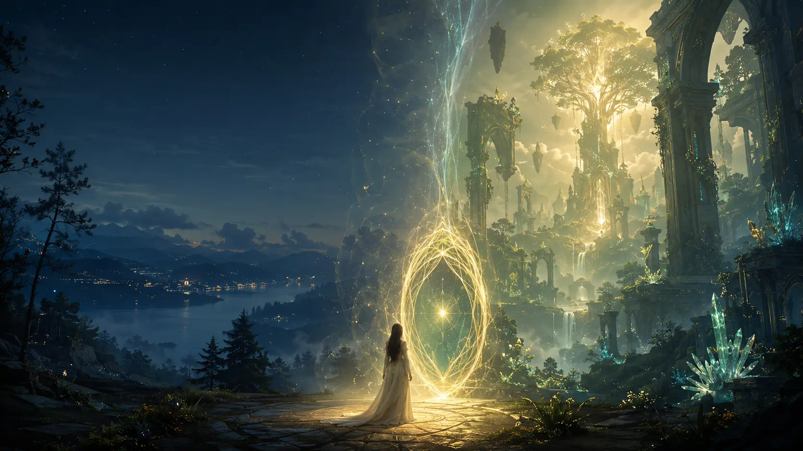

THE ILLUSTRATED STORIES
LEGEND OF NOERA CHRONICLES
Connected illustrated stories from Lady Zion's journey across Earth, Zionara, and the Living Bond between them.
Enter Season I ↓SEASON I
The Awakening
Some journeys begin with a prophecy. Others begin with power. Lady Zion's begins with something far quieter: she simply sees the world differently.
While others overlook the lonely, the forgotten, and the unnoticed, Lady Zion quietly recognizes them. She cannot explain why strange dreams linger in her heart or why unfamiliar places appear in her notebook. She only knows that ordinary life is slowly becoming extraordinary.
Far beyond Earth's skies, an ancient world waits in faithful hope. The Living Bond known as the Auret has never ceased calling the Earth-born. But for the first time in centuries, its Calling carries a song.
SEASON I JOURNEY
The Awakening unfolds in five movements.
SEASON I EPISODES
Choose an Episode.
Each Episode opens on its own dedicated page with its cover, synopsis, and illustrated chapters.
EPISODE II
The Sanctuary
A dream becomes a doorway. Enter Episode II →EPISODE III
Two Lives
One heart. Two worlds. Enter Episode III →EPISODE IV
The Calling
Courage reveals the Steward within. Enter Episode IV →EPISODE V